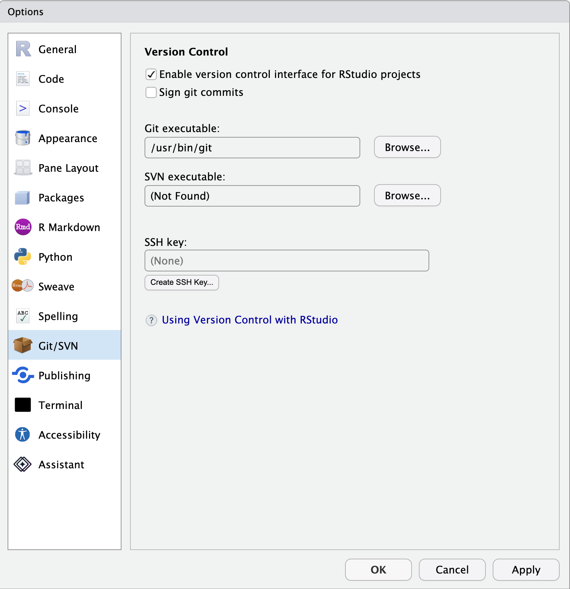

How to install RStudio & Quarto
About
This page briefly describes how to install RStudio and Quarto on your personal computer.
If you plan to attend either the Quarto I or Quarto II workshops, please follow these steps before the Bootcamp.
Many of us work on computers that Penn State provides and manages. Most of us who do so do not have administrator privileges on these machines. So, we have to work with the IT staff in our unit to install and test the software below.
RStudio and git are widely known. Quarto is relatively new and less well known. None of them are regarded as security risks, as far as I know. So, you should have no issues.
However, you will want to give your IT staff time to do this work. Feel free to share this page with them.
Important
We have found some issues when users save files to shared or synchronized storage space like OneDrive. So, please advise your IT staff not to install applications to shared or synchronized directories.
Moreover, when creating your own R or Quarto files, save them to non-shared or synchronized locations on your local file system.
Install R

(Optional) Install git
The version control package git may not be installed on your Windows machine. It is usually installed by default on Mac OS.
If git is not installed, follow these instructions for installing git on your system are here.
You can use R, RStudio, and Quarto without using git, but there are good reasons to consider using it.
If you decide to use the web-based git code sharing service called GitHub with RStudio, you will want to follow the excellent instructions here.
Install RStudio

Install Quarto

Launch RStudio

Confirm that R Studio can access git by opening Tools/Global Options menu item.

Select Git/SVN from the left panel. Confirm that “Enable version control interface for RStudio projects” is checked and that there is an entry in the box under “Git executable:”.
Get ready for Quarto I and/or II
The Quarto I and II workshops presume that you have a fully working installation of RStudio. This means that you can clone a repository from GitHub to your local machine, open, and edit it. The easiest way to confirm that you are ready to go is to follow the instructions for cloning the template repository used in Quarto I. Those instructions are in slides begining here.
If you are able to render hello-world.qmd into an HTML file then you are ready to get maximum enjoyment and benefit from these workshops.